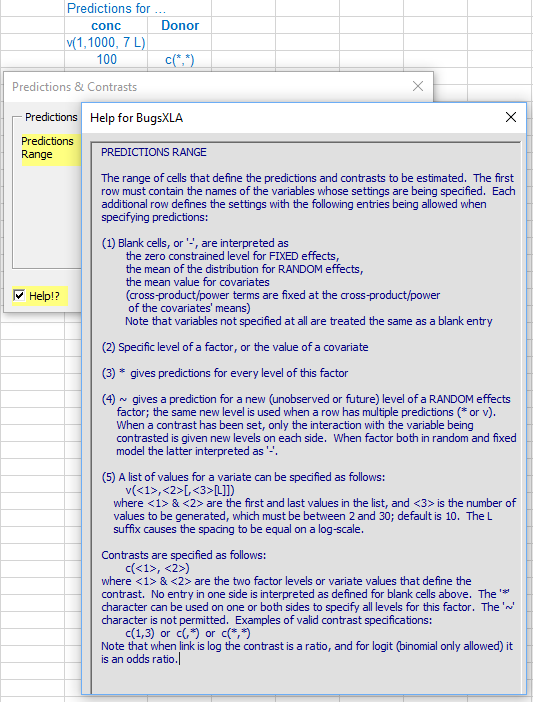

Walkthrough example (Version 6.0)
This example is unchanged for Version 7.0 bar some additional post analysis output options.
Pharmacology Biomarker: Random effects Emax model
Bayesian Analysis Made Simple. Case Study 7.1.
This experiment was run to estimate the concentration-response relationship between a pharmacology biomarker of inflammation and a novel compound. The data can be found in the Excel file 'BugsXLA Book Case Studies.xls' bundled with the latest download.
The Bayesian model specification form is obtained by clicking on the 'Bayesian Model' icon on the BugsXLA toolbar.
This brings up the Bayesian Model Specification form.
The data is stored in an Excel sheet in a rectangular block of cells, the first row of which contains the names of the variables. Valid names begin with a letter and may contain letters, numbers, dot ('.') and the underscore; BugsXLA is case sensitive. Note the text in blue that defines predictions and contrasts to be estimated; this is discussed further below.
The model is specified using statements similar in style to those used in major statistical packages such as SAS, R or Genstat. Models can include 'variable selection' terms (VS factors and variates) as discussed, for example, in Chipman, Hamada & Wu (1997), Technometrics, Vol 39, pp372-381.
Any categorical factors (or 'censors' when censored data are being modelled) must be defined, which can be done by clicking on the 'Set Variable Types' button. Note that this utility for defining the factors does not edit the actual values of the variables. It is used to identify the variable as a factor so that BugsXLA treats it appropriately. It is also used to determine the order of the levels' labels, which do not have to be numeric. This process only has to be done once, as the information is stored in a comment in the cell containing the variable’s name on the Excel sheet.
Clicking on the 'MCMC & Output Options' button on the original model specification form allows the user to alter settings for the BUGS MCMC run and analysis output. BugsXLA can also create R scripts so that further work can be undertaken using the R environment with all the additional functionality that this package provides.
After choosing the MCMC and output settings, and confirming the model is OK, if the 'Predictions or Contrasts' box is checked the following form will appear.
It is here where the blue text defining the predictions or contrasts to be estimated is read into the program. Like all the other forms in BugsXLA, there is a 'Help!?' check box in the lower left corner that will highlight those parts of the form about which help information can be obtained. In this case, by moving the mouse over the highlighted 'Predictions Range' text, the help shown here is displayed.

After defining the types of predictions required, it is necessary to specify the prior distributions for the model parameters. The defaults should represent only weak prior knowledge in most situations, but it is strongly advised that sensitivity to priors be assessed as part of any Bayesian analysis. It is also advisable to consider informative priors for nuisance parameters, particularly when they are hyper-parameters for random effects.
If a Half-Normal distribution is used, the random effects prior can be elicited graphically by clicking on the Graphical Feedback Interface button labelled 'GFI'. By default the user is asked to think about the maximum credible difference between the effects of two randomly chosen levels of the factor. When a log or logit link is used, this is equivalent to thinking about the ratio or ratio of odds between factor level settings. The implied prior distribution, with some of its percentiles, is dynamically updated as the user changes this 'credible difference'.
Output to aid model checking can be requested on the form that appears if the 'Model Checks' button is clicked on the 'Prior Distributions' form.

After the priors have been specified, BUGS is run via a script. Excel will be frozen until the BUGS program has completed the analysis. Once BUGS has finished its work the 'Import Results' form shown here will de displayed.
On clicking the 'Import' button summary statistics, and any samples requested, are then imported to new Excel sheets. The column with the header 'OpenBUGS Name' shows the generic node names used in OpenBUGS. These will only be useful to an experienced BUGS user who wished to edit the code directly later. Informative names for the parameters are given in the column with the header 'Label'. The output provides a summary of the model fitted, plus the prior distributions specified. It also records the settings for the MCMC run with the time taken to run. Due to the inherent uncertainties currently associated with using MCMC sampling methods to tackle generic problems, a final warning message is displayed to ensure the user remains cautious when interpreting the results. BugsXLA provides guidance on the adequacy of the MC precision by colour coding the posterior st.dev. values and including information as comments in both the Mean and St.Dev. cells.
The predictions and contrasts are also imported onto the same sheet as the summary statistics.
The 'Post Plots' utility, available via the BugsXLA toolbar, can be used to produce a graph of the predicted values. Clicking on this icon whilst cell labelled 'Post Plot' is selected will bring up the form shown below on the right, which can be used to create the graph shown.
The graph can be edited using the options shown on the form.
If model checking output was requested, then a sheet labelled 'Mdl Chks(1)' will be created with both numeric and graphical results to help assess the goodness of fit of the model.
If samples are imported from BUGS, then the 'Post Plots' utility, described above, can be used to display both the posterior and prior distribution on the same graph. Clicking on this icon whilst one of the cells in the Excel column of imported samples is selected will bring up the form shown on the right. Providing the prior can be inferred from the model, this will be displayed on the form.
A histogram of the posterior samples, with the prior overlaid, is produced.
If you look in the sub-folder specified for the R script on the 'MCMC & Output Options' form, you will find the plain text file 'BGX R Script.R'. This script file utilises the BRugs package to allow the user to rerun the analysis and undertake further work within the R environment. If you wish to view the BUGS code or script files, these are also stored in this sub-folder along with the data and initial value files. Another R script file named 'BGX R EDA.R', shown above, is also created that, for some models, facilitates an exploratory data analysis (although the Emax has not been added to the list of models with this functionality yet). The intention of this script is to provide some R code that can be used as a starting point for exploring the data, not a definitive EDA.
Various aspects of the BugsXLA program can be altered on the 'BugsXLA Options' form obtained via the BugsXLA toolbar.